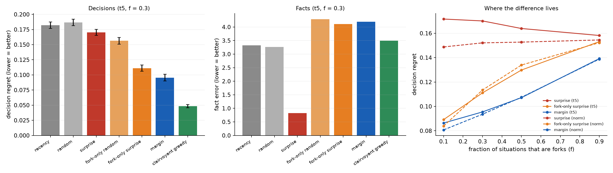
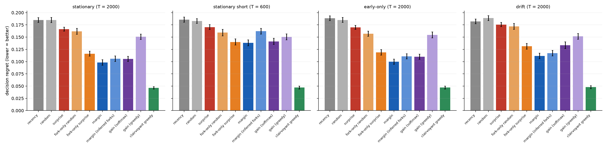
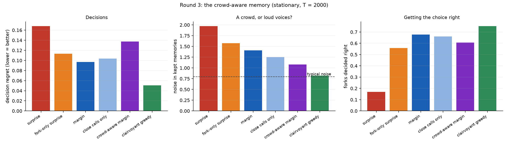

K. T. Niedzwiecki
Independent Researcher, South Australia
26 September 2026
A memory that cannot keep everything must choose what to keep. Several recent designs for learning memories keep what is surprising: observations with a large prediction error. We test an alternative: keep what can still change a decision. We use a controlled toy world with a capacity-limited memory (5% of the stream). Every prediction was pre-registered and frozen before the code that tested it existed, across four rounds, two of them revised after external review.
The result is a practical lesson and an open question. What a memory should keep is set by what can still change its decisions, and a crowd of memories is wise only if its judge is independent.
Every learning system with finite memory faces the same question: what should stay? Brains face it continually. Machine-learning systems face it in replay buffers, in continual learning, and increasingly in the long-term memory of language models. One recent design, Titans (Behrouz et al., 2025), updates a neural memory in proportion to surprise. Surprise-driven retention has also been proposed for continual learning of language models (SuRe, 2025). Surprise is attractive: it is cheap, local, and resembles the way surprising events are remembered well.
Surprise measures how unexpected an observation is, not how much it matters. A startling fact about a situation in which there is nothing to decide changes nothing downstream. A quiet fact about a close call can change everything. This distinction has a long history in decision theory as the value of information (Howard, 1966). In neuroscience, Mattar & Daw (2018) proposed that the hippocampus prioritises which memories to replay by their gain: how much they would improve future choices. In reinforcement learning, the ideal priority of a stored experience is its value for improving the policy, and the TD error (surprise) is a proxy for it.
This study asks the retention version of that question in the most controlled setting we could build. When space is tight, should a memory keep what is surprising or what can change a decision? By how much does it matter, and why? The work began from an intuition in earlier work by the author on how differences survive in growing structures: a difference lasts only where the future can still split (the "fork law"). This is inspiration, not derivation. The forks here are simply situations with more than one available action.
A note on method. Every prediction was written down and committed to a public repository before the code that tests it existed. Two rounds of design review by an independent AI reviewer led to revisions before freezing. Failed predictions are reported with the same prominence as successful ones: 17 of 28 held.
World. There are S = 200 situations. Each is forced (one action) with probability 1 − f,
or a fork (two actions) with probability f, with f = 0.3 unless stated.
- Forced values are heavy-tailed: μ ~ 2·t₅. They are often startling, and truly irrelevant to any
decision.
- Fork values are close calls: μ₁ ~ N(0, 1), μ₂ = μ₁ + δ, δ ~ N(0, 0.5²).
Stream. T = 2000 observations. Each is a uniformly drawn situation, a uniformly drawn available
action, and a reward r = μ + ε, ε ~ N(0, 1).
Agent. Beliefs come only from memory: Q = Σr / (n + 1) for each situation and action (a
normal–normal posterior mean, prior N(0, 1)).
Memory. Capacity K = 100 observations (5% of the stream). Once full, the K stored items and
the newcomer form a pool. Each item is scored leave-one-out, using beliefs from the pool without
it. The lowest score is evicted, and ties are broken at random.
Measures. - Decision regret: the mean over forks of the value lost by choosing with the agent's beliefs. - Fact error: the mean squared error of all beliefs. - All comparisons are paired: every rule sees the same worlds and streams. Uncertainty comes from a paired bootstrap over worlds (100 per condition, 10,000 resamples). "Improves by ≥ X%" means the point estimate is at least X% and the paired-difference 95% CI excludes zero.
Rules. Every rule gets the same budget. The scores use the leave-one-out residual
z = |r − Q_a| and the fork margin m = |Q₁ − Q₂|.
| rule | keeps |
|---|---|
| recency | the latest K (a context window) |
| random | a uniform reservoir sample |
| surprise | the largest z (inspired by Titans and prioritized replay; an implementation of neither) |
| fork-only random / fork-only surprise | as random / surprise, but forced situations are never kept. These are relevance-filter controls. |
| margin | forks only, scored (z / (n_a + 2)) / (m + 0.1): how far the memory moves its action's estimate, relative to how close the call is. It is "decision-sensitive surprise". |
| gain (softmax, β = 5) | a Mattar–Daw-style gain: the improvement in the agent's own softmax policy value from keeping the memory |
| clairvoyant greedy | evicts the memory whose removal least increases the true regret. It is a comparator that sees the truth, not a proven bound. |
| round | question | pre-registration frozen at | review |
|---|---|---|---|
| 1 | consequence vs surprise, with relevance-filter controls | e110a11 |
revised after Astra's design review |
| 2 | replication; the principled gain rival; inferred forks; the cliff; drift | f45fa98 |
self-review against the round-1 checklist |
| 2b | discovery failure vs premature eviction | 5fe1b74 |
follows Astra's review of the round-2 results |
| 3 | a crowd-aware memory | 5d83910 |
follows an exploratory diagnostic (§4.4) |

Figure 1. Round 1, primary condition (t5, f = 0.3). Left: decision regret. Middle:
fact error. Right: regret against the fraction of situations that are forks, for heavy-tailed
(t5) and matched-normal forced values.
t5: 50% → 44% → 35% → 12% for f = 0.1 → 0.9), and is smaller when forced values are not
heavy-tailed. Where every situation is a fork, the relevance filter is worthless, yet margin still
beats fork-only surprise by about 9%.Round 1: 7 of 8 predictions held.

Figure 2. Round 2 on fresh worlds. Regret for every rule in four streams.
T = 2000 (the pre-registered tolerance was 5%). On a short
stream (T = 600) it beats surprise by only 4.9% (the prediction was ≥ 10%).Round 2: 7 of 10 predictions held.
A fork can be recognised only once both of its actions have been seen. The inferred rule's
shortfall mixes two problems:
- (D) forks never discovered: 1.45% of forks at T = 2000, 39% at T = 600;
- (E) evidence evicted before discovery.
An "eventual-discovery oracle", which knows from the start which forks will be discovered, separates them. The added regret, on paired worlds:
| stream | (D) never discovered | (E) evicted before discovery |
|---|---|---|
T = 2000 |
+0.0001 | +0.0077 |
T = 600 |
+0.0107 | +0.0132 |
Round 2b: 2 of 5 predictions held.
What does the clairvoyant comparator, with half of margin's regret, know? Following a question
from the author, whether its secret resembles the wisdom of crowds, we measured the noise
|r − μ| in each rule's kept fork memories (round-2 worlds, 40 seeds):
| noise in kept memories | forks decided right | estimated margin when wrong | |
|---|---|---|---|
| fork-only surprise | 1.59 | 53% | 0.36 |
| margin | 1.43 | 65% | 0.91 |
| clairvoyant | 0.78 | 76% | 0.00 |

Figure 3. Round 3 on fresh worlds. Left: regret. Middle: noise in kept memories; the dashed line is typical noise. Right: forks decided right.
The pre-registered crowd-aware margin rule keeps margin's relevance, but replaces the residual
z with z·exp(−z²/2v). That term peaks at typical size under the agent's own predictive
variance v.
An exploratory twin identifies the cause. The same rule, judging typicality against the truth, nearly matches the clairvoyant:
| regret | in wrongly decided forks, share of kept memories supporting the wrong choice | |
|---|---|---|
| crowd vs own belief | 0.137 | 87% |
| crowd vs truth (cheating) | 0.058 | 71% |
| clairvoyant | 0.051 | — |
Round 3: 1 of 5 predictions held.
What is established here, and what is not. - The central idea, prioritising memory by consequence for decisions, is not new. It is the value of information, and in the brain it is Mattar & Daw's gain. - What this study adds is a pre-registered, controlled demonstration for retention under a capacity limit, a setting where surprise-based rules are currently popular. It includes: - controls that separate relevance filtering from decision-margin weighting; - a measured split between factual accuracy and decision quality; - a decomposition showing that the cost of learning relevance is mostly premature eviction; - the finding that the ideal memory's advantage is largely representativeness, which cannot be obtained naively from the agent's own beliefs.
Implications for learning memories. 1. A memory built to keep what is surprising can be well informed and still choose badly. 2. Evidence needs somewhere to wait until its relevance can be judged. That points to a short-term holding buffer ahead of a selective long-term store, in the spirit of Complementary Learning Systems (McClelland, McNaughton & O'Reilly, 1995). 3. A memory that judges what is "typical" against its own beliefs will entrench its errors.
The last point is not special to machines. Confirmation bias and group echo chambers have the same structure: a crowd whose only judge of "normal" is itself.
The open question: where can a memory find an independent judge? Candidates include: - a separate sample of memories never used for the decision itself (in the spirit of cross-validation); - a slower, older estimate; - two memory systems that check each other, as the fast hippocampal and slow cortical systems might.
We think this is the most important question the study raises.
Limitations. - This is a designed toy world, in which surprise and consequence were built to be able to come apart. The results show how large the difference can be and how the mechanisms behave, not how often real data looks like this. - Most rules were told which situations offer a choice. Section 4.3 measures the cost of removing that knowledge. - The gain rival used one untuned temperature. - The surprise comparator implements neither Titans nor prioritized replay. - The clairvoyant comparator is not a proven bound. - Sections 4.4 and the echo-chamber twin are exploratory, and are labelled as such.
| round | held | failed |
|---|---|---|
| 1 | P1 (margin > fork-only surprise ≥ 10%), P2b, P3, P4, P5, P6, P7 | P2a (relevance filter alone ≥ 20%) |
| 2 | R1a, R1b, R2 (gain within ±10%, point estimate), R4b, R5a, R5b, R6 | R3a, R3b (inferred forks), R4a (cliff ≥ 30%) |
| 2b | B1a, B2a | B1b, B2b, B3 |
| 3 | C2 (less noisy memories) | C1, C3, C4, C5 |
17 of 28 held. The full pre-registrations, with the commits at which each was frozen and the logged pre-run changes, are in the repository.
Everything is in github.com/kekekatie/geometric-impedance, under
exploratory/surprise_vs_consequence/. The scripts are self-contained NumPy and run in minutes on
a laptop.
| result | script | pre-registration |
|---|---|---|
| round 1 | svc.py |
PREREGISTRATION.md |
| round 2 | svc2.py |
PREREGISTRATION_ROUND2.md |
| round 2b | svc2b.py |
PREREGISTRATION_ROUND2B.md |
| §4.4 diagnostics | diag_puzzles.py |
exploratory |
| round 3 | svc3.py |
PREREGISTRATION_ROUND3.md |
| echo-chamber twin | diag_echo.py |
exploratory |
The study was designed, coded, analysed and drafted by Claude (Anthropic) in conversation with the author. The wisdom-of-crowds hypothesis (§4.4–4.5) was the author's. Astra reviewed the round-1 pre-registration and the round-2 results; that review led to the relevance-filter controls, the common leave-one-out scoring, the discovery decomposition (§4.3), and several corrections.